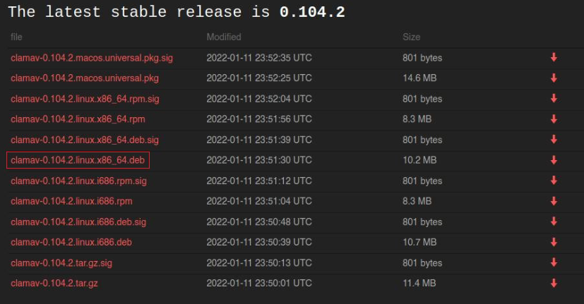
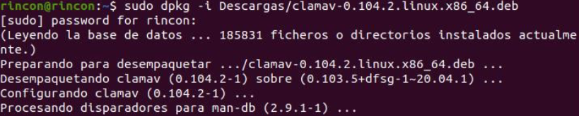
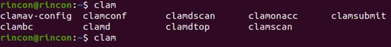
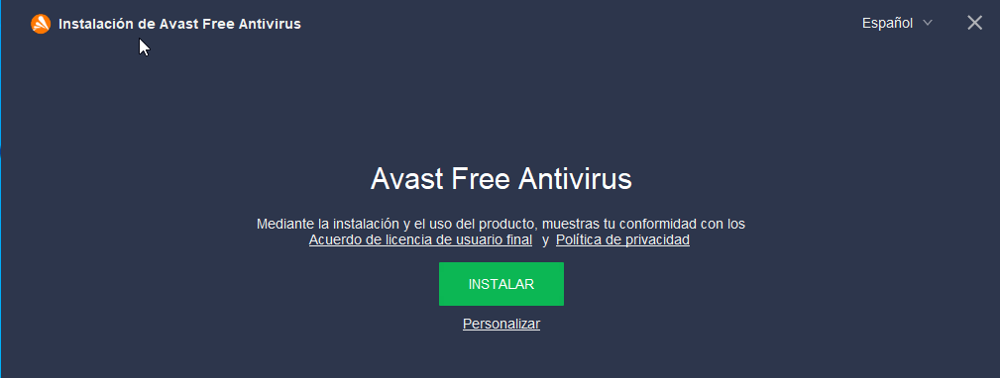
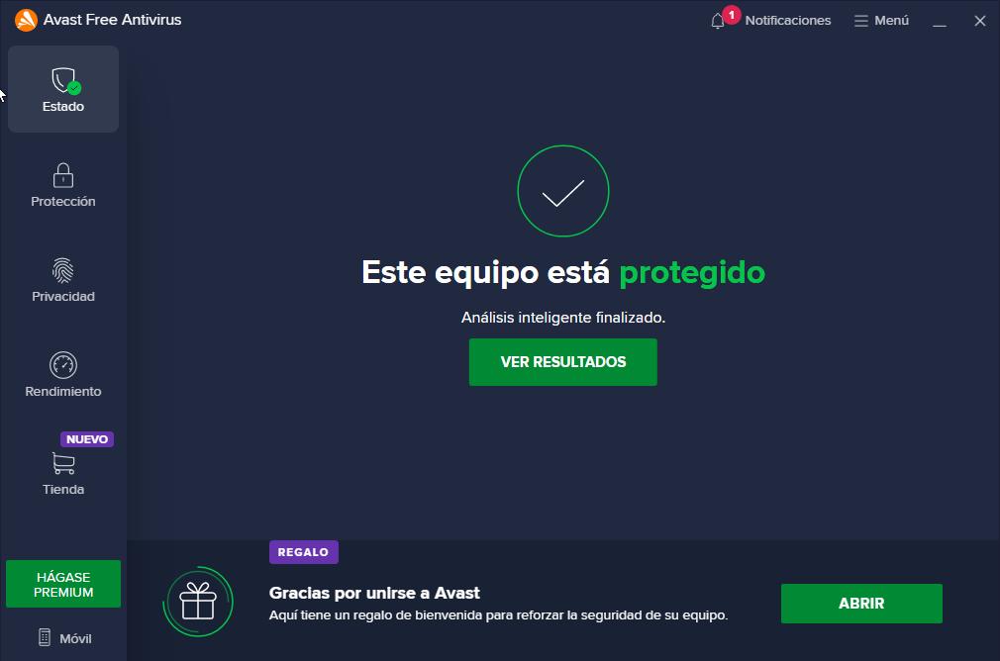
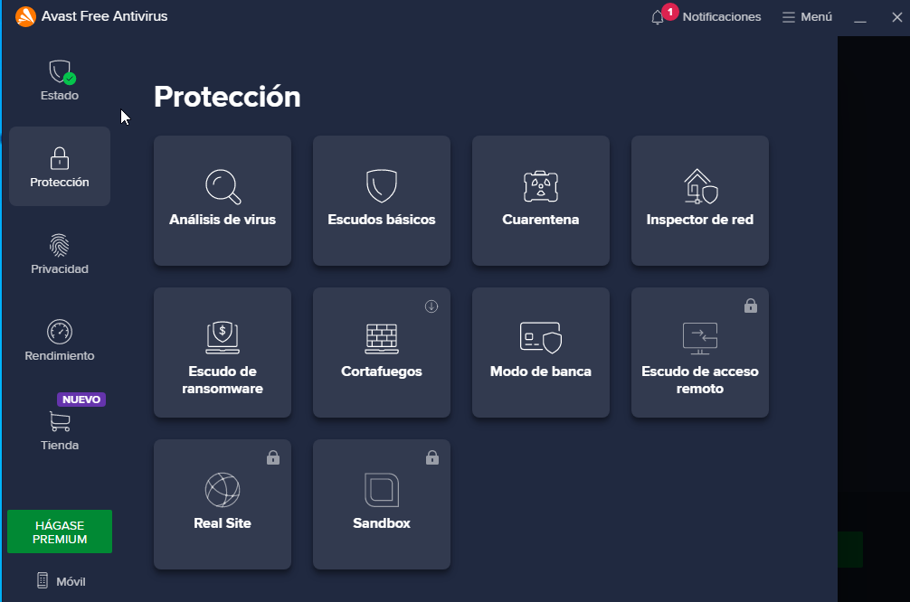

Vamos a instalar dos softwares antivirus, primero para Linux y Luego para Windows.
ㅤ
Clamav es un software antivirus open source para las plataformas Windows, GNU/Linux entre otros.
En mi caso he decidido irme a la pagina oficial de Clamav: Aquí Para mi ubuntu he elejido la opcion marcada en el cuadro rojo, para ello he tenido en cuenta la arquitectura del sistema y el Sistema Operativo.
Voy a instalar el paquete con el siguiente comando: sudo dpkg -i PAQUETE
Uso Básico:
Bien, una vez instalado para ver las diferentes opciones, podriamos escribir “clam” y pulsar doble tabulador para ver todas las opciones
Podriamos ejecutar “man” y el nombre del programa para obtener un manual con mas detalles. Vamos a utilizar algunas de estas herramientas.
ㅤ
Escanear un directorio / archivo (clamscan):
Para escanear un directorio utilizaremos la opcion -r de “recursive” → sudo clamscan -r /home /rincon
Para escanear un archivo → sudo clamscan archivo
ㅤ
Eliminar algun archivo o directorio malicioso
Para los directorios utilizaremos → sudo clamscan --infected --remove --recursive /home/rincon
Para los archivo → sudo clamscan --infected --remove archivo
ㅤ
Utilizacion de demonios.
Para no realizar este proceso de manera manual podemos iniciar un demonio en segundo plano que se encargara de todo esto.
Utilizaremos el comando → sudo /etc/init.d/clamav-freshclam start
ㅤ
Avast Free Antivirus es un software antivirus gratuita para la protección de nuestro equipo.
Para descargarlo nos iremos a su página oficial: Aqui
Una vez descargado ejecutaremos el archivo.exe y le daremos a instalar
ㅤ
Cuando termine se nos abrira el programa y le daremos a "ejecutar analisis"
ㅤ
Aqui tenemos algunas de las opciones que nos permite el programa.
ㅤ
Clamav para Linux es mas complejo de utilizar ya que todo se realiza mediante la línea de comandos, en cambio Avast tiene una interfaz para el usuario, lo cual hace que su uso sea mas simple.
Ambos softwares son bastantes eficaces y están a las alturas de las espectativas.